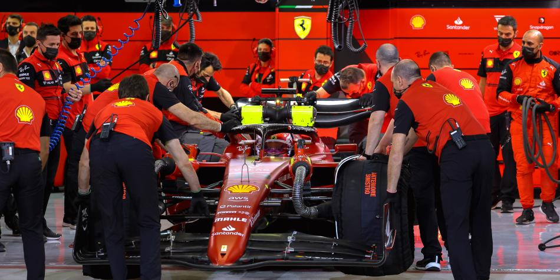

Las 24 Horas de Le Mans es una famosa carrera de resistencia que se celebra anualmente en el Circuito de la Sarthe, cerca de Le Mans, Francia. Se lleva a cabo desde 1923 y es una de las competiciones más prestigiosas del automovilismo mundial.
La categoría de hypercars se refiere a un selecto grupo de vehículos de alto rendimiento que representan lo último en tecnología automotriz, velocidad y exclusividad. Estos automóviles son diseñados para ofrecer experiencias de conducción extraordinarias, combinando potentes motores con innovaciones tecnológicas que los colocan a la vanguardia del automovilismo.
Los hypercars no solo se destacan por su rendimiento impresionante, sino también por su diseño único y características exclusivas. A menudo producidos en ediciones limitadas, estos vehículos se convierten en auténticas piezas de colección. Con precios que alcanzan cifras millonarias, los hypercars son símbolos de estatus y pasión por la ingeniería automotriz.
| Característica | Descripción |
|---|---|
| Rendimiento Excepcional | Motores potentes (V8, V10, V12) que superan los 300 km/h. |
| Tecnología Avanzada | Innovaciones en aerodinámica, materiales (fibra de carbono) y propulsión híbrida. |
| Ediciones Limitadas | Producción en cantidades muy reducidas, aumentando su exclusividad. |
| Diseño Exclusivo | Estética única y futurista, con alto reconocimiento visual. |
| Precio Elevado | Costos que generalmente oscilan en el rango de millones de dólares. |
1. Condición Física Entrenamiento Aeróbico y Anaeróbico: Los pilotos deben tener una excelente resistencia cardiovascular y fuerza muscular. Las sesiones de entrenamiento pueden incluir correr, nadar y ciclismo. Entrenamiento de Fuerza: Fortalecer el cuello, hombros y brazos es crucial, ya que estos músculos soportan la fuerza G y el control del vehículo a altas velocidades. Flexibilidad y Movilidad: Ejercicios de estiramiento y yoga ayudan a mantener la flexibilidad, lo cual es importante para soportar las exigencias físicas del manejo.
2. Entrenamiento Mental Concentración y Enfoque: La habilidad para mantener la concentración durante largas horas es vital. Los pilotos pueden utilizar técnicas de meditación y visualización. Toma de Decisiones Rápidas: El simulador de carreras puede ser útil para practicar la toma de decisiones bajo presión y anticipar situaciones en la pista.
3. Simulaciones y Pruebas en Pista Pruebas en Circuito: Pasar tiempo en la pista con el vehículo es esencial para familiarizarse con sus características y comportamiento. Simuladores de Carreras: Muchos pilotos utilizan simuladores para practicar diferentes escenarios y mejorar su estrategia de carrera.
4. Nutrición y Hidratación Dieta Equilibrada: Consumir una dieta rica en carbohidratos, proteínas y grasas saludables para asegurar energía y recuperación. Hidratación: Mantenerse bien hidratado es clave, especialmente en carreras largas donde las condiciones pueden ser extremas. 5. Conocimiento Técnico del Vehículo Estudio del Automóvil: Conocer a fondo las especificaciones del hypercar que conducirán, incluyendo el sistema de control y características de rendimiento. Colaboración con Ingenieros: Trabajar con el equipo técnico para entender los ajustes y estrategias de configuración del vehículo.
6. Aspectos Psicológicos Manejo de Estrés: La presión en las carreras puede ser abrumadora. Técnicas de relajación y manejo del estrés son importantes para mantener la calma y el rendimiento. 7. Equipamiento y Seguridad Preparación de Equipamiento: Asegurarse de que todo el equipamiento (trajes, cascos, etc.) esté en perfectas condiciones y cumpla con los estándares de seguridad. Entrenamiento en Seguridad: Familiarizarse con los procedimientos de seguridad y las normas del circuito.
